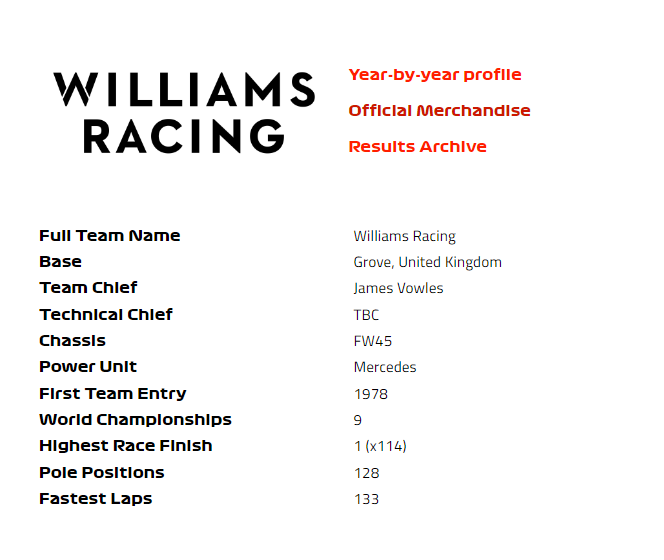
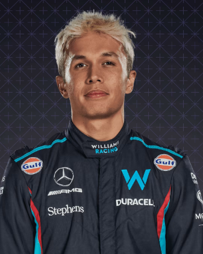
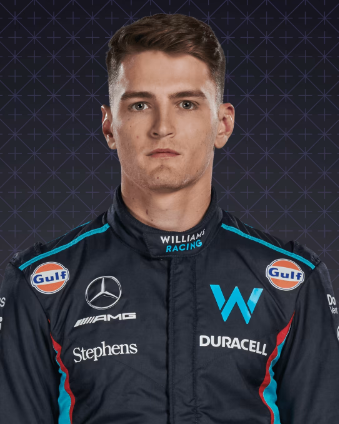

Williams

En perfil
Impulsado por la brillantez y la pasión del difunto Sir Frank Williams, Williams creció desde sus humildes comienzos hasta convertirse en un gigante de la Fórmula 1, que no tiene rival excepto Ferrari y McLaren en términos de éxito duradero. Durante las últimas cuatro décadas, el equipo ha acumulado victorias en Grandes Premios y gloria en campeonatos, y en el proceso ha nutrido a algunos de los mayores talentos del deporte, tanto dentro como fuera de la cabina. Y, tras la decisión de la familia Williams de hacerse a un lado tras la venta del equipo a Dorilton Capital en 2020, ha comenzado una nueva era...
2022
A pesar de que el FW44 muestra un ritmo prometedor en ocasiones, particularmente en manos de Alex Albon, quien se clasificó en un noveno lugar en Spa, anotó solo ocho puntos en la temporada, dejando al equipo décimo y último en la clasificación final.
2021
Experimente algo así como un resurgimiento, logrando un podio en el Gran Premio de Bélgica reducido por la lluvia, cortesía de la estrella habitual de clasificación Q3, George Russell. Mejora al octavo lugar en la general en una campaña tristemente empañada por la muerte del fundador Sir Frank Williams en noviembre.
2020
Termina una temporada sin un punto por primera vez en su historia, pero el futuro del equipo está asegurado a medida que los nuevos propietarios toman el relevo de la familia Williams y se acuerdan vínculos técnicos más estrechos con los proveedores de motores Mercedes para 2021 y más allá.
2019
Un solo punto en 21 carreras presagia la peor campaña en la historia del equipo, a pesar de la incorporación del ex ganador del Gran Premio Robert Kubica. Por otro lado, el novato George Russell se marca a sí mismo como una estrella del futuro, superando a su experimentado compañero de equipo en cada ronda.
Pilotos

Alejandro Albón

Sargento logan